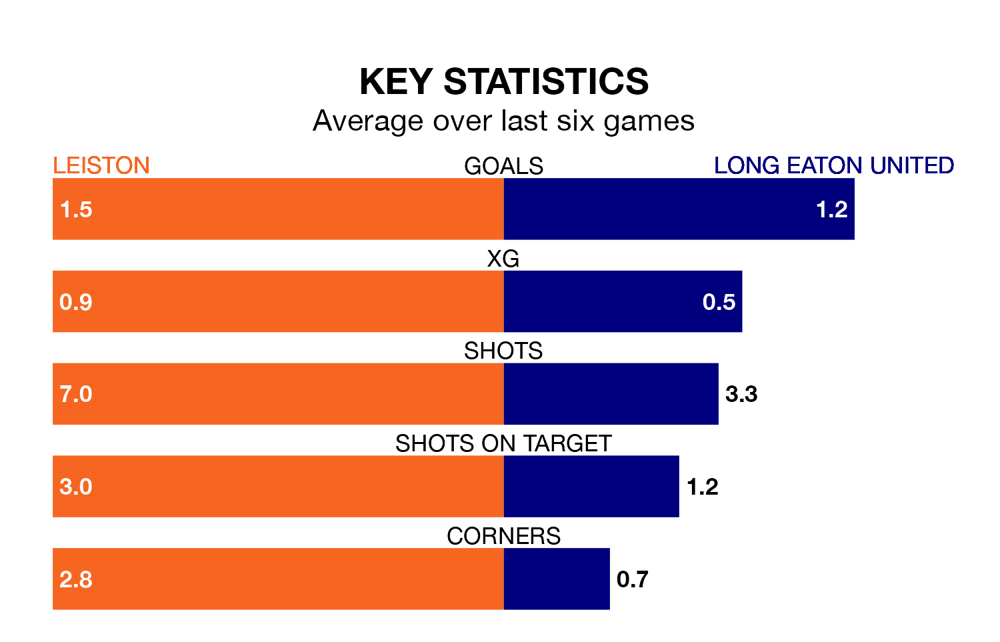

Leiston are heavy favourites to keep all three points at home in Tuesday's late kick-off against Long Eaton United.
Leiston, who sit 14th in Southern League Premier Central with 24 games played, are priced at 1.2 to seal victory at Victory Road.
Sitting eight places and 23 points behind them in the table, Long Eaton are 8.0 to win with *Betting Company*, while the draw is at 5.0.
Leiston are in mixed form in Southern League Premier Central, with three wins and a draw from their last six games.
With a win and a draw over that period, Long Eaton's form is much worse – they have taken four points from 18, compared to the hosts' 10.
With 20 goals in 26 games so far this season, United are the league's second-lowest scorers with 0.8 goals per game. And they are conceding more than average, letting in 73 goals at a rate of 2.8 per game.
Leiston are also below average scorers, with 1.4 goals per game, compared to a league average of 1.5. They have conceded 1.5 goals per game.
Leiston's last match was on Saturday, a 2-1 win against AFC Sudbury.
Long Eaton lost 2-0 against Redditch United last time out, also on Saturday.
Updated: 09:21 (UTC), 30/01/24